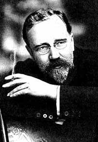

Каменев Л.Б.
Лев Борисович Каменев (настоящая фамилия Розенфельд)
Советский партийный и государственный деятель, большевик, революционер.
6(18).07.1883 – 25.08.1936
Отец Льва был машинистом на Московско-Курской железной дороге, впоследствии — после окончания Петербургского технологического института — стал инженером; мать окончила Бестужевские высшие курсы. Лев окончил гимназию в Тифлисе и в 1901 г. поступил на юридический факультет Московского университета. Вступил в студенческий социал-демократический кружок. За участие в студенческой демонстрации 13 марта 1902 г. арестован, в апреле выслан в Тифлис. Осенью того же года выехал в Париж, где познакомился с Лениным. Вернувшись в Россию в 1903 г., готовил забастовку железнодорожников в Тифлисе. Вел пропаганду среди рабочих в Москве. Арестован и выслан в Тифлис под гласный надзор полиции. На V съезде РСДРП в 1907 г. Каменев вошёл в Центральный комитет (ЦК) этой партии.
Каменев вёл революционную работу на Кавказе, в Москве и Санкт-Петербурге. В 1914 г. он возглавил газету «Правда». Во время Первой мировой войны Каменев высказывался против популярного среди большевиков ленинского лозунга о поражении своего правительства в империалистической войне. В ноябре 1914 г. арестован и в 1915 г. сослан в Туруханский край. Освобожден после Февральской революции.
В 1917 г. неоднократно расходился с Лениным во взглядах на революцию и на участие России в Первой мировой войне. Считал требование «долой войну» бессодержательным и что его следует заменить лозунгом: «Давление на Временное правительство с целью заставить его открыто, …немедленно выступить с попыткой склонить все воюющие страны к немедленному открытию переговоров о способах прекращения мировой войны». Ленин подвергал линию Каменева критике, но считал дискуссию с ним полезной. На заседании ЦК РСДРП(б) 10 (23) октября 1917 г. Каменев и Зиновьев голосовали против решения о вооружённом восстании.
18 октября в газете «Новая Жизнь» Каменев опубликовал статью «Ю. Каменев о „выступлении“». С одной стороны, Каменев объявил, что ему «неизвестны какие-либо решения нашей партии, заключающие в себе назначение на тот или иной срок какого-либо выступления», и что «подобных решений партии не существует». С другой стороны, он дал понять, что внутри большевистского руководства нет единства по этому вопросу. Ленин расценил это выступление как разглашение фактически секретного решения ЦК и потребовал исключить Каменева и Зиновьева из партии. 20 октября на заседании ЦК РСДРП(б) было решено ограничиться принятием отставки Каменева и вменить ему и Зиновьеву в обязанность не выступать ни с какими заявлениями против намеченной линии партии.
Во время Октябрьской революции 25 октября (7 ноября) 1917 г. Каменев был избран председателем ВЦИК. Он покинул этот пост 4 (17) ноября 1917 г., требуя создать однородное социалистическое правительство (коалиционное правительство большевиков с меньшевиками и эсерами). В ноябре 1917 г. Каменев вошёл в состав делегации, направленной в Брест-Литовск для заключения сепаратного договора с Германией. В январе 1918 г. Каменев во главе советской делегации выехал за границу в качестве нового посла России во Франции, но французское правительство отказалось признать его полномочия. При возвращении в Россию он арестован 24 марта 1918 г. на Аландских островах финскими властями. Каменев был освобождён 3 августа 1918 г. в обмен на арестованных в Петрограде финнов.
С сентября 1918 г. Каменев — член Президиума ВЦИК, а с октября 1918 г. — председатель Моссовета (этот пост он занимал до мая 1926 г.).
С марта 1919 г. стал членом Политбюро ЦК РКП(б). 3 апреля 1922 г. именно Каменев предложил назначить Сталина Генеральным секретарём ЦК РКП(б). С 1922 г. в связи с болезнью Ленина Каменев председательствовал на заседаниях Политбюро.
14 сентября 1922 г. Каменев назначен заместителем председателя Совета народных комиссаров (СНК) РСФСР и заместителем председателя Совета труда и обороны (СТО) РСФСР. После образования СССР в декабре 1922 г. Каменев стал членом Президиума ЦИК СССР. С 1923 г. Каменев стал заместителем председателя СНК СССР и СТО СССР, а также директором Института Ленина.
После смерти Ленина Каменев в феврале 1924 г. стал председателем СТО СССР (до 1926 года). В конце 1922 г. вместе с Г.Е. Зиновьевым и Сталиным образовал «триумвират», направленный против Л.Д. Троцкого, что, в свою очередь, послужило толчком к образованию левой оппозиции в РКП(б). Однако в 1925 г. вместе с Зиновьевым и Н.К. Крупской встал в оппозицию к Сталину и набиравшему силу Бухарину; стал одним из лидеров так называемой «новой», или «ленинградской», а с 1926 г. — объединённой оппозиции. На XIV съезде ВКП(б) в декабре 1925 г. Каменев заявил: «товарищ Сталин не может выполнять роль объединителя большевистского штаба. Мы против теории единоначалия, мы против того, чтобы создавать вождя».
На пленуме ЦК, состоявшемся непосредственно после съезда, Каменев впервые с 1919 г. был избран лишь кандидатом в члены, а не членом Политбюро ЦК ВКП(б), а 16 января 1926 г. потерял свои посты в СНК и СТО СССР и назначен наркомом внешней и внутренней торговли СССР. 26 ноября 1926 г. он был назначен полпредом в Италии.
В октябре 1926 г. Каменев выведен из Политбюро, в апреле 1927 г. — из Президиума ЦИК СССР, а в октябре 1927 г. — из ЦК ВКП(б). В декабре 1927 г. на XV съезде ВКП(б) Каменев исключён из партии. Выслан в Калугу. Вскоре выступил с заявлением о признании ошибок. В июне 1928 г. Каменев восстановлен в партии. В 1928—1929 гг. он был начальником Научно-технического управления ВСНХ СССР, а с мая 1929 г. — председателем Главного концессионного комитета при СНК СССР. В октябре 1932 г. Каменев был вновь исключён из партии за недоносительство в связи с делом «Союза марксистов-ленинцев» и отправлен в ссылку в Минусинск. В декабре 1933 г. Каменев снова восстановлен в партии и назначен директором научного издательства «Academia». Был автором биографий Герцена и Чернышевского, изданных в серии ЖЗЛ. На XVII съезде ВКП(б) выступил с покаянной речью, что не уберегло его от дальнейших репрессий. Не был избран на съезд писателей СССР. После убийства С.М. Кирова в декабре 1934 г. Каменев вновь был арестован и 16 января 1935 г., по делу так называемого «Московского центра», приговорён к 5 годам тюрьмы, а затем 27 июня 1935 г. по делу «Кремлёвской библиотеки и комендатуры Кремля», приговорён к 10 годам тюрьмы.
В августе 1936 г. Каменев был выведен в качестве подсудимого на Первый московский процесс — по делу так называемого «Троцкистско-зиновьевского объединённого центра», 24 августа осуждён к высшей мере наказания и 25 августа расстрелян. В 1988 г. реабилитирован за отсутствием состава преступления.
| Калинин М.И.< Предыдущая | Следующая >Каменев С.С. |
|---|